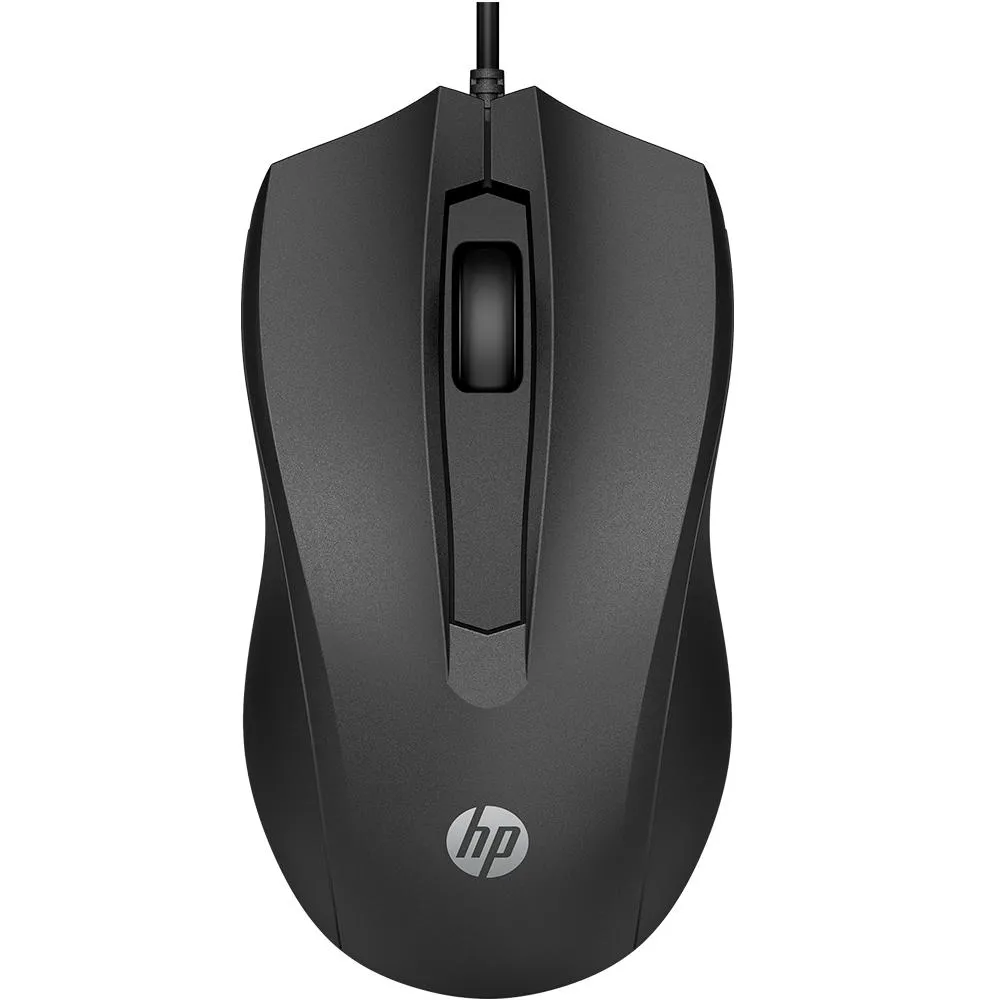

Catálogo de Produtos
Foto
Código
Descrição
Qtde em estoque
Valor Unitário
1
Mouse laser sem fio Dell
5
R$ 179,00
2
Mouse Bluetooth Dell
6
R$ 338,00

3
Mouse Óptico sub preto 100
3
R$ 48,30
Descrição
Caracteística do Produto
Especificações
Sensor óptico preciso com 1.600 DPI permite que você trabalhe na maioria das
superfícies
Configuração USB rápida e fácil com cabo de 1,5m
Design ambidestro, produzido para caber de forma natural e perfeita na palma da sua
mão
Três botões integrados
Ampla compatibilidade: Windows e Mac
Avaliação do produto
José Aparecido
Muito bom
Joaquim Jorge
Bom